Proces opracht 1
Deze week heb ik als voorbereiding voor studio 2: motion graphic een paar voorbeelden van motion graphics op gezocht die ik interresant en cool eruit vond zien om als inspiratie te gebruiken.
Ik heb specifiek deze 2 gekozen omdat ze heel smooth en vloeibaar over vind komen, wat ze ook weer prettig maakt om ernaar te kijken.
Ook heb ik een niet bestaand woord verzonnen waar ik mijn motion graphic voor wil maken: "Glorp", ik heb dit gekozen/verzonnen omdat het mij leuk leek om een motion graphic te maken voor een woord dat een beetje funky klinkt als je het uitspreekt.


 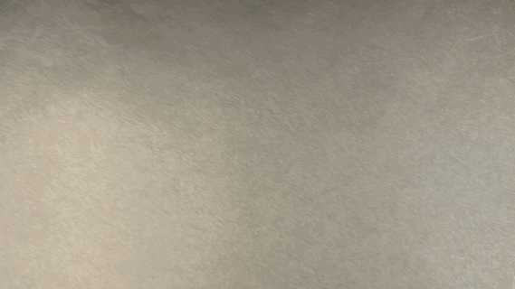
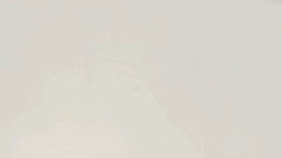
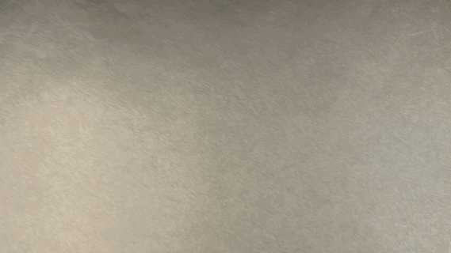
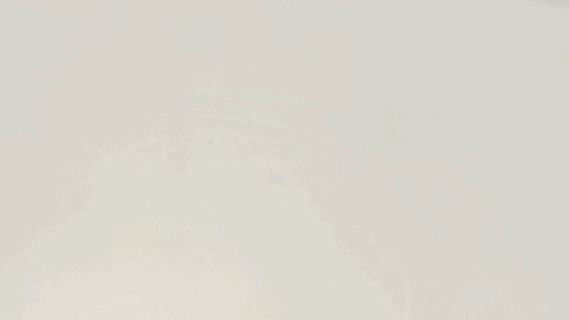
 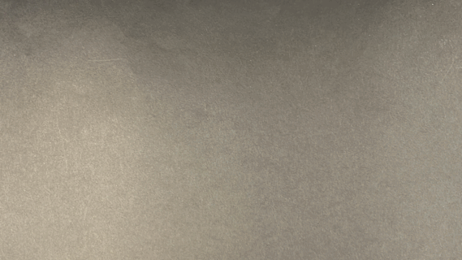
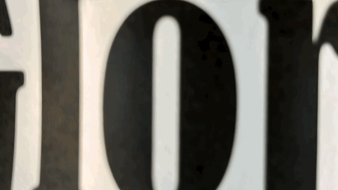
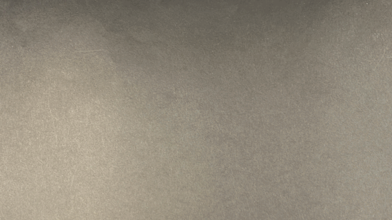
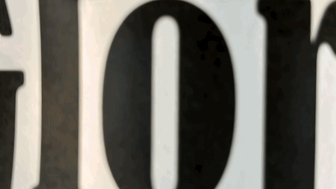
 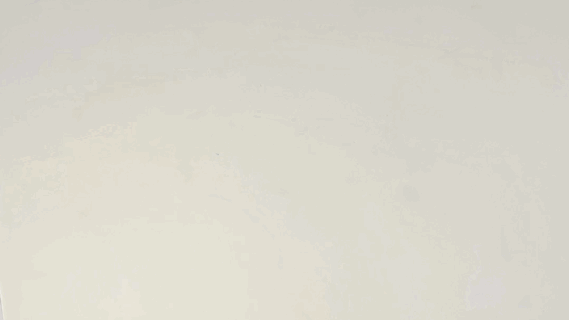
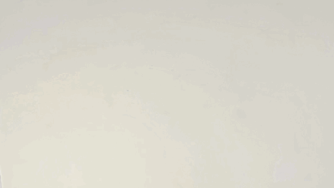
 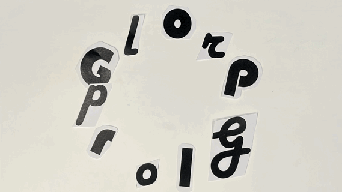
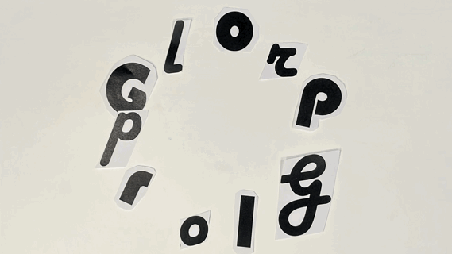


 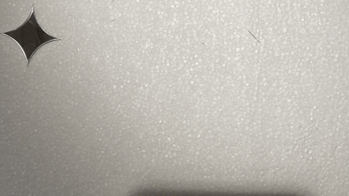
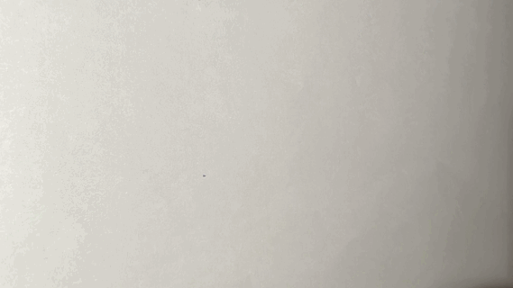
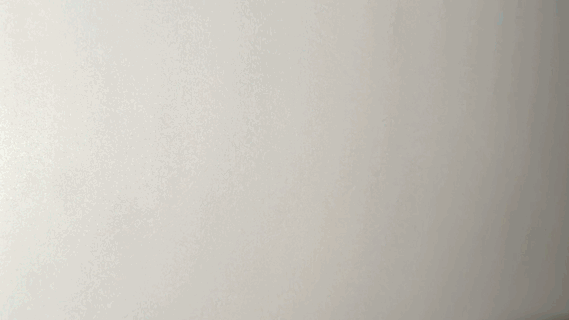
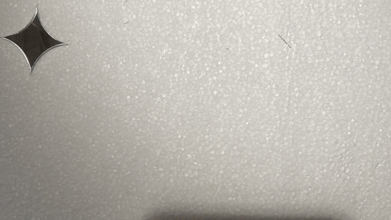
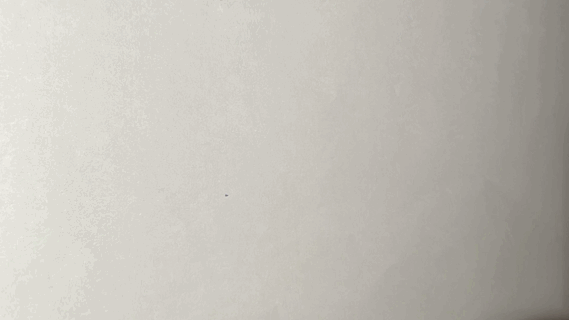
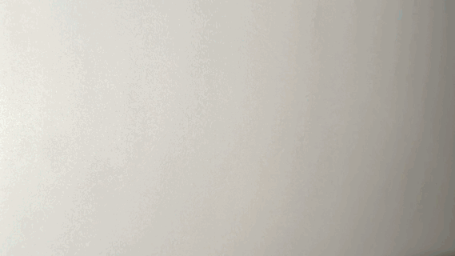
 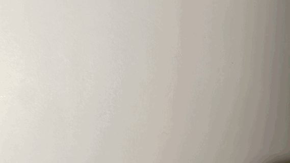
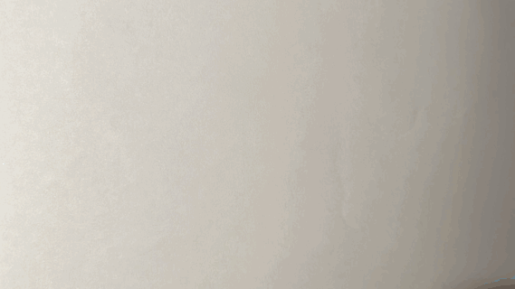
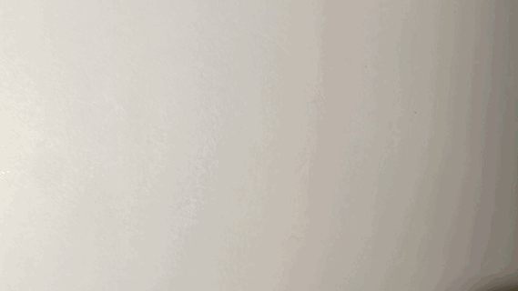
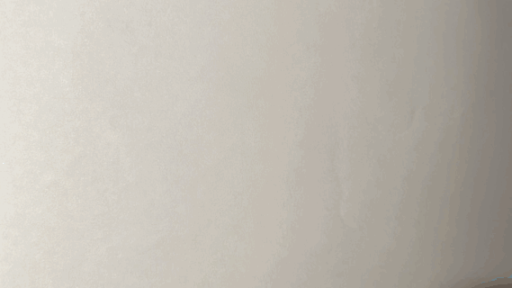